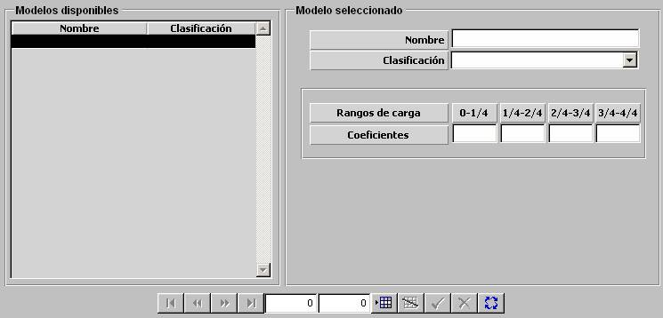

Reducción de Aceleración de Aéreas por Carga

Los modelos de Aceleración y Giro de unidades Aéreas se ven afectados por el rango de Carga de la unidad. Esta influencia se parametrizan mediante una tabla en la que se introducen coeficientes de corrección para los siguientes rangos de carga de la unidad, expresados en fracciones de la carga máxima de la unidad:
0 – 1/4, 1/4 – 2/4, 2/4 – 3/4, 3/4 – 1
Descripción de los parámetros:
Coeficiente: Factor que reduce la aceleración de la unidad aérea.
Unidades: ---
Rango: 0 - 0.999
Ejemplo:
Si 0 ⇒ no afecta a la aceleración.
Si 0.999 ⇒ aceleración nula.